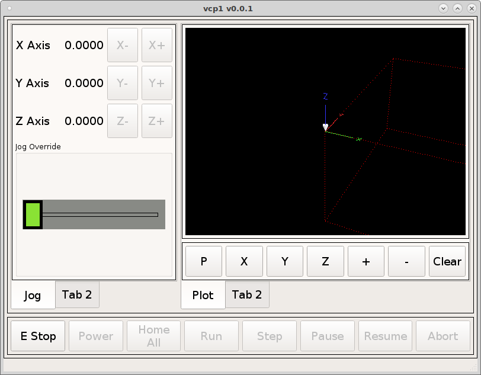

Back Plot
Lets finish the back plot tab by adding some normal push buttons to control the view. First drag a Horizontal Layout below the back plot and morph into a Qframe and make the same changes as before Box, and Margins. You can also right click in the Object Inspector if you can’t right click on the layout because it’s so small. Drag 7 buttons into the frame and change the objectNames and text like this
objectName text
pView P
xView X
yView Y
zView Z
zoomViewIn +
zoomViewOut -
clearView Clear
In the QMainWindow add the following to the stylesheet so all regular push buttons will have the same style.
QPushButton {
min-height: 50px;
min-width: 50px;
font: 12pt "DejaVu Sans";
}
{kind=link}
Select the Signal/Slot tab and add a new one with the green plus for each button we want to connect to the back plot. Using the drop down box for each item select the Sender, Signal, Receiver and Slot for each button.
Sender Signal Receiver Slot
pView clicked() gcodebackplot setViewP()
xView clicked() gcodebackplot setViewX()
yView clicked() gcodebackplot setViewY()
zView clicked() gcodebackplot setViewZ()
zoomViewOut clicked() gcodebackplot zoomOut()
zoomViewIn clicked() gcodebackplot zoomIn()
clearView clicked() gcodebackplot clearLivePlot()
{kind=link}
Now when we run the VCP we can control the backplot with our touch buttons and by dragging the touch screen.
{kind=link}